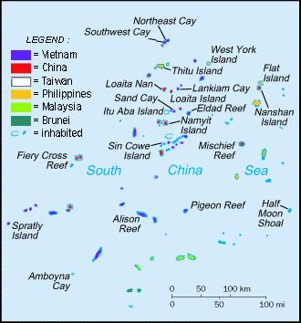

MXTHL3

Situées en mer de Chine Méridionale, dans une zone riche en ressources,
les îles Spratleys font l'objet d'une importante dispute territoriale entre
la Chine, le Vietnam, Taïwan, la Malaisie, les Philippines et Brunéi. La Chine
a adopté une stratégie de construction et des militarisation des îlots.